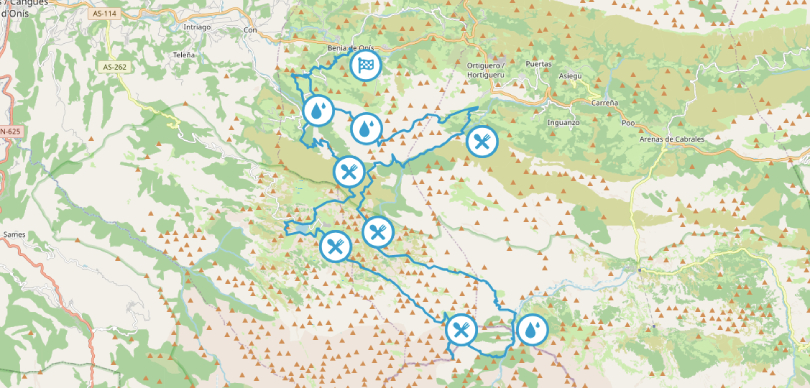

EL GRAN TRAIL PICOS DE EUROPA
El Gran Trail Picos de Europa es una carrera de montaña que tiene lugar en el Parque Nacional de los Picos de Europa, una impresionante cadena montañosa ubicada en el norte de España. A continuación, te proporciono algunas características generales sobre esta carrera:
Distancia:
La distancia exacta puede variar dependiendo de la edición de la carrera y de la ruta específica seleccionada para ese año. Generalmente, las carreras de trail running en los Picos de Europa suelen tener distancias que oscilan entre los 20 km y los 80 km o más.
Desnivel:
El desnivel acumulado es significativo, ya que las rutas en los Picos de Europa incluyen ascensos y descensos pronunciados. El desnivel puede variar desde varios cientos de metros hasta más de 5.000 metros en algunas distancias más largas.
Altitud Máxima y Mínima:
Altitud Máxima:
Los Picos de Europa incluyen cumbres que superan los 2.600 metros, por lo que la altitud máxima en la carrera podría acercarse o superar esta cifra, dependiendo de la ruta.
Altitud Mínima:
La altitud mínima será el punto de partida de la carrera, que podría estar alrededor de los 100 metros o más, dependiendo de la ubicación específica.
Tiempo:
El tiempo necesario para completar la carrera variará según la distancia, el desnivel, las condiciones climáticas y el nivel de habilidad de los participantes. Las carreras más cortas podrían completarse en unas pocas horas, mientras que las distancias más largas podrían llevar todo el día o incluso más.
FECHA DE REALIZACION: 23/05/2024
